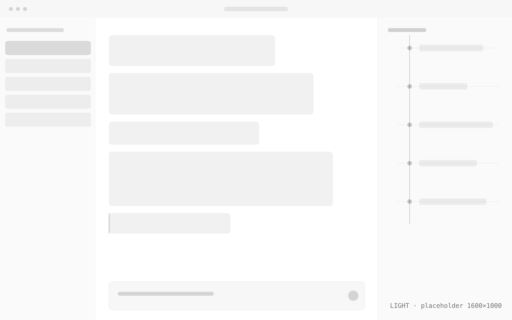
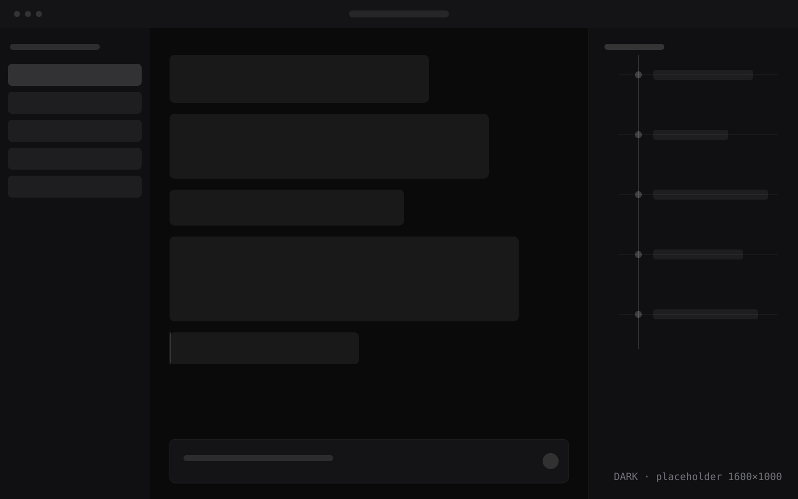

Process apart from prose
Replies stay in the chat; thinking, tool calls and permission prompts go into a trace panel. The two cross-link by anchor, so "why did it do that" always has an answer.
A Windows desktop client for ACP agents that keeps the process visible: thinking and tool calls live in a trace swimlane, not buried in the chat stream.
把 agent 的思考与工具调用从对话里拆出来，做成一条能回看的泳道。


拖动中间的斜切滑块；聚焦后可用 ← → 键。
Replies stay in the chat; thinking, tool calls and permission prompts go into a trace panel. The two cross-link by anchor, so "why did it do that" always has an answer.
Sessions, traces and settings live in %APPDATA%\com.sincearc.app. Nothing is uploaded, and the client works fully without an account.
Deleting a session or a file requires explicit authorization. Storage is counted and reported, never acted on.